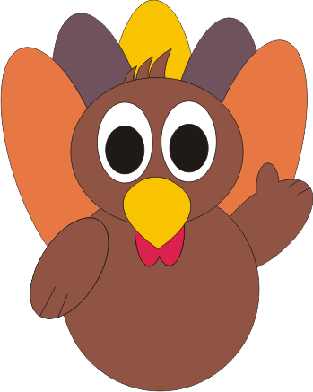

Programador :
García Pérez Eduardo Ismael
Carrera :
Desarrollo Softaware
Catadratico :
Rocio Cristal
Diseñador :
García Pérez Eduardo Ismael
¿Cómo Jugar?
Solo necesitas repeler tres hordas de zorros que intentaran llevarte 10 huevos tuyos.
Muevete con las teclas de direcciones y taclea a los zorros con la tecla espaciadora.